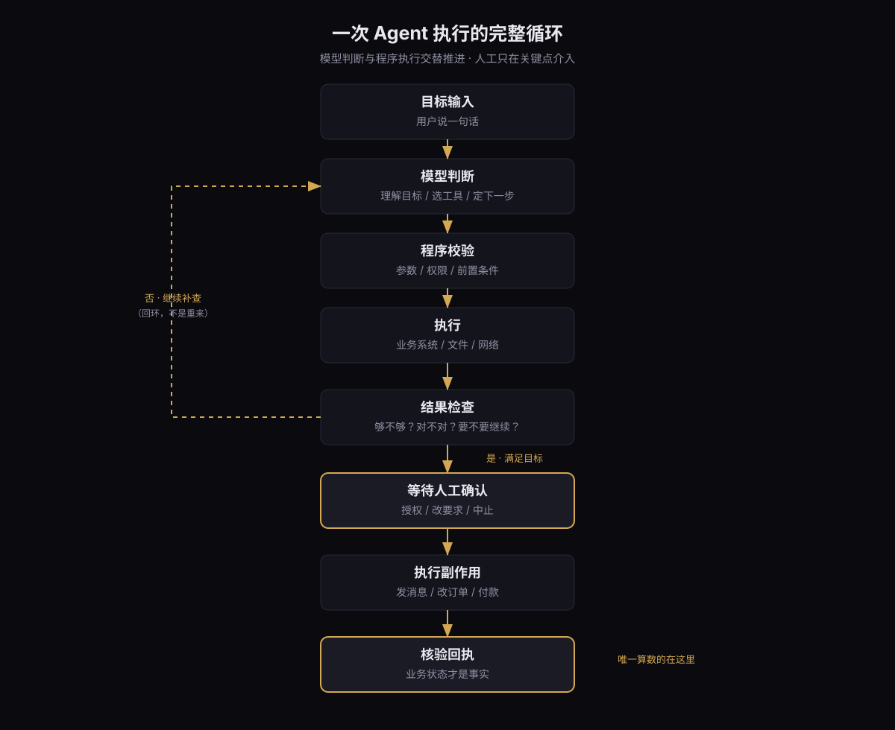
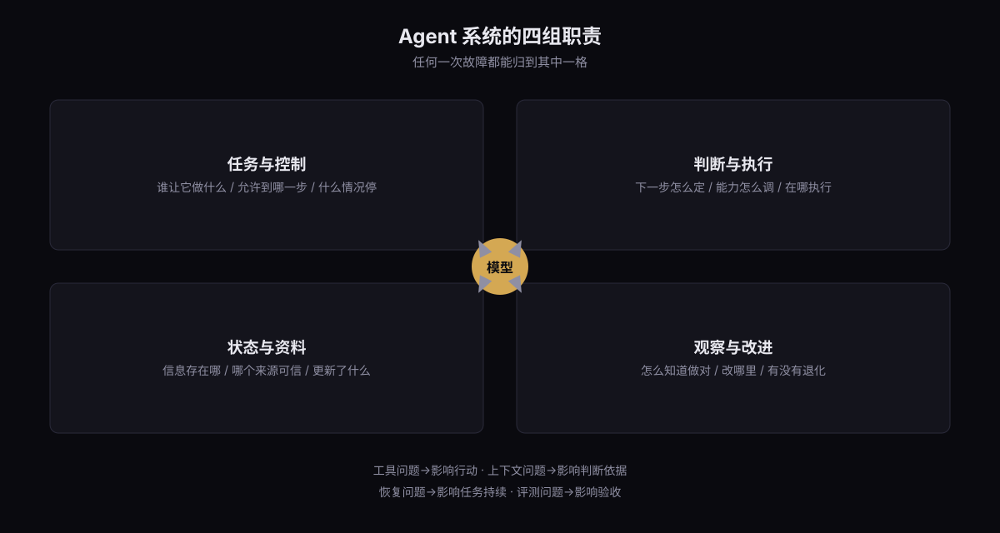
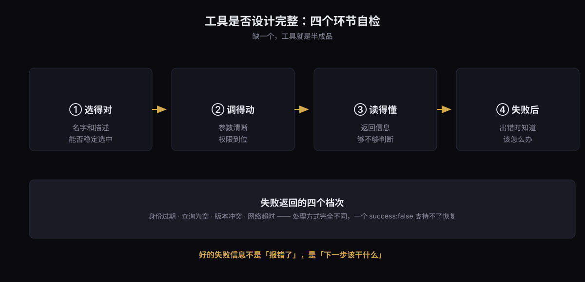
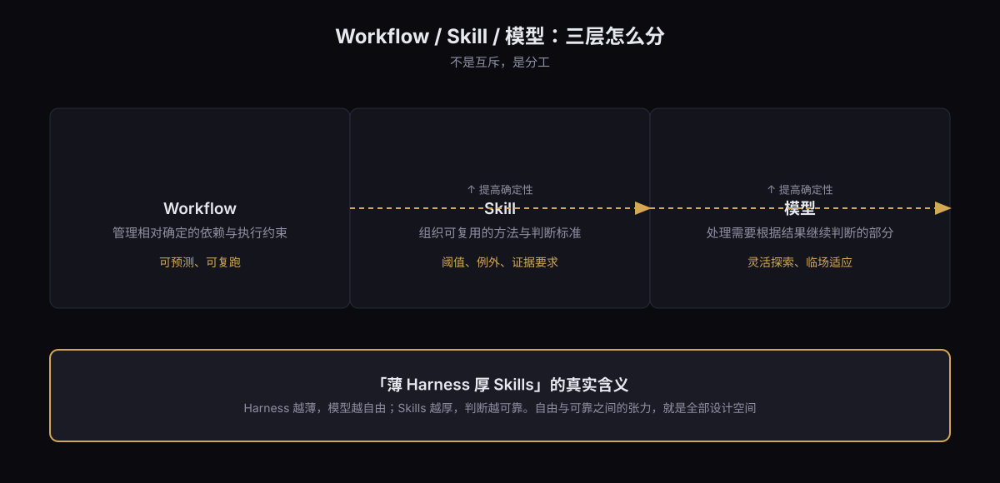

薄 Harness 厚 Skills
把模型的判断，接进一个可验证、可恢复的执行过程
TL;DR
- Agent 的产品价值不是”更聪明”，而是压缩用户和结果之间的中间层。 它接过了一部分原本由人来做的工作：理解目标、选信息和工具、根据执行反馈改下一步。
- 判断一个场景适不适合 Agent，看四个条件：信息能否取得、工具能否使用、结果能否验证、失败能否恢复。比套架构有用得多。
- 工具设计的真正难点不在”能调”，在”调得对、读得懂结果、失败后知道怎么办”。
一个
success: false支持不了恢复。 - 企业 Agent 卡住的地方，多数不在模型，而在信息进入模型之前 —— 口径没定义清楚，检索再多也白搭。
- 多 Agent 是最后手段，不是默认答案。 加密之前先回答：工作能否独立、各自要什么信息、结果谁来收、怎么证明完成。
一、把一句话拆开看
把这样一个任务交给 AI：
看看这个客户最近的订单和沟通记录，判断他为什么迟迟没有续约，整理一份跟进建议。等我确认后，把消息发给他。
这句话很短。要做完它，系统得：
- 识别客户是谁，取得访问权限
- 查询订单系统、沟通记录、合同状态
- 判断信息够不够，不够就继续查
- 发现订单和沟通记录冲突，回去核实
- 生成建议，等人确认
- 执行发送
- 检查消息是不是真的发出去了
中间还可能遇到权限不足、用户临时改要求。
这就是 Agent 要处理的那一类任务：需要根据现场情况不断作出判断的任务。
这句话里最容易被忽略的是第 7 步。前面六步都能”看起来完成”，只有第 7 步是业务事实。
二、Agent 到底新在哪
传统软件把能力拆成菜单和页面。用户找到客户、查订单、翻沟通记录，再去消息系统里完成跟进。流程中的行为大量发生在人身上，软件提供功能，人负责把功能串起来。
Agent 接过了其中一部分”串”的工作。
但要理解这个变化，得先分清三个东西：
大模型提供理解、推理和生成。工具让系统取得信息、执行操作。Agent 通过运行机制，把模型判断和工具执行接成一个循环。
循环长这样：

图 1 — 一次 Agent 执行的完整循环
工作流提前组织控制路径：先查询、再分类、再生成报告。Agent 把一部分路径选择交给模型，让它根据反馈继续判断。
这不是谁取代谁。一个规则清楚的报销流程，完全可以把节点固定下来，只在票据理解的位置用模型。一个复杂的故障排查，则可能需要不断读取新证据、调整方向。
自主程度应该跟着任务需要变化，而不是跟着技术热度变化。
三、四组职责：一张图定位问题
把系统放进一张职责图里，后面所有设计都能落到具体位置：

图 2 — 四组职责，任何一次故障都能归到其中一格
四组职责对应四类问题。不要求拆成四个服务，但任何一次故障都能归到这四格里：
- 工具问题 → 影响行动
- 上下文问题 → 影响判断依据
- 恢复问题 → 影响任务持续
- 评测问题 → 影响验收
分清以后，排查就有了方向。把所有失败都归为”模型不行”，项目就失去了迭代空间。
四、工具：从”能调”到”调得对”
给 Agent 接接口，真正的难点不是技术对接，是把接口变成它能够准确选择、正确使用、理解反馈的能力。
4.1 名字就是选择规则
假设有三个工具：智能查询、增强查询、高级查询。
模型不知道你脑子里的业务背景。它只能依据名称、描述、参数和历史结果来选。这三个名字没说明什么时候用哪个，模型就很难稳定选择。
更清楚的设计是按业务职责表达：
- 根据订单号查当前状态
- 根据客户和时间范围批量查订单
- 检索公开资料
而且工具描述还要交代不适用的情况，避免能力重叠。
4.2 数量要围绕任务收敛
把每个底层接口原样暴露，模型会反复寻找。把所有操作塞进一个万能工具，参数又复杂到看不懂。
合适的粒度只能通过真实任务验证，不能靠设计阶段的直觉。
4.3 确定性的转换留给程序
用户说”发到项目群”。模型表达目标，系统解析候选对象、检查权限、映射内部 ID。同名对象无法唯一确定时，返回候选项或要求澄清。
模型可以继续使用工具返回的稳定 ID，但不应该承担凭空构造、反复转抄复杂标识的负担。
4.4 失败信息要够用
工具返回的不只是执行结果，也是下一轮判断的依据。
{"success": false}这个不够。 身份过期、查询为空、版本冲突、网络超时，需要的处理方式完全不同。
一个像样的冲突返回长这样：
{
"status": "conflict",
"code": "STALE_CONTEXT",
"observed_version": 142,
"current_version": 144,
"next_action": "读取新增消息，重新判断是否发送"
}关键不在格式，在它告诉模型下一步该干什么。
4.5 工具是否设计完整，四个环节自检

图 3 — 工具设计自检，缺一个就是半成品
四个环节缺一个，工具就是半成品。
五、上下文：口径比检索难
客户跟进任务里，模型需要知道：客户是谁、当前订单怎么样、最近聊过什么、哪些要求已经确认。
企业里很多”模型不懂业务”的问题，其实发生在信息进入模型之前。
- “退款”是申请退款，还是已经退回资金？
- “本月销售额”按下单、付款还是确认收货算？
- 两个系统里的客户名称，是不是同一个对象？
口径不清楚，模型没法替组织达成共识。 这不是检索能解决的，是数据治理和业务规则整理。
还有一些判断依据根本没进系统。客户经理为什么觉得这个客户还值得跟，供应商为什么不肯按原数量补货 —— 这些可能在聊天记录、Excel、甚至某个人脑子里。系统记录了最后的结果，未必记录形成结果的过程。
5.1 进入上下文的方式比数量重要
一份十万行的订单数据，应该保存在文件或数据库里，让程序过滤聚合，再把结果和出处交给模型。
判断所需的信息要充分，进入上下文的方式要有选择。
5.2 压缩要保住什么
长任务会不断产生历史。压缩能减少体积，但必须保住：
- 原始目标
- 最新约束
- 已确认的决定
- 失败原因
- 未完成事项
- 重要证据的地址
一段”前期分析完成”的摘要，如果没说哪些已核实、接下来等谁决定，就很难支持可靠恢复。
5.3 四类信息分开管理
| 类型 | 作用 | 更新频率 |
|---|---|---|
| 任务状态 | 现在做到哪里 | 实时 |
| 业务知识 | 规则与方法 | 慢 |
| 长期记忆 | 跨任务可复用的稳定信息 | 很慢 |
| 执行存档 | 原始结果与日志 | 只增 |
一次出差地点不能轻易写成长期住址。聊天摘要里的付款状态，也不能替代执行前对订单系统的查询。
记忆是帮助继续工作的派生信息，关键业务事实必须能回查。
六、Skill：把老师傅的判断写成流程
工具回答”能做什么”。Skill 进一步说明”这类事应该怎么做”。
搜索工具能找到海外达人。但”找到适合某个品牌的达人”还要判断：在哪些平台搜、怎么组合关键词、哪些账号要排除、怎么判断活跃度和匹配度、数据不足时是否继续补查。
这里最难的，经常是那些老大难的标准问题：到多少算好，到多少算坏。
这些阈值、例外和证据要求，才是值得沉淀的经验。写出”搜索、筛选、生成报告”不难。难的是告诉它：什么情况该补查、什么情况可以淘汰、什么情况必须回来问人。
6.1 一个真实的权衡
出海营销 Agent 的实现，经历过几轮调整：
- 让模型直接生成代码 → 简单任务可以，串联长业务步骤时稳定性不足
- 接成外部工作流 → 执行路径明确了，但模型难以理解和调整内部环节
- 拆成工具 → 固定路径能保顺序，用户却想在中间改条件；完全临时编排又增加不确定性
冲突很具体：用户既要任务稳定完成，又要已经完成一半的工作可以修改。
这不是确定性问题，是权衡问题。
6.2 可解释性来自可复查的证据
咨询交付类的流程更清楚：抓视频、清洗、检查资料范围、分词、生成报告。
假设分析师看完分词结果，要求把两个词归并再重新看结论。这是对已有环节的修改，不需要重新抓视频。
但如果系统只保存了最终报告，内部流程又封成一个从头跑到尾的工具，它就缺少从中间继续的条件。
要支持这个需求，得保存：原始数据、清洗结果、分词参数、中间产物，以及各阶段之间的依赖。
改分词 → 只重做受影响的分析和报告。改视频筛选条件 → 重新确认资料范围，再更新下游。
新报告还要关联新的参数和数据版本，避免旧结论混入新产物。
6.3 三层怎么分

图 4 — 三层不是互斥，是分工
三层可以在同一项任务里协作，不是互斥关系。
拆分的粒度围绕可独立执行、可检查、可重跑的业务步骤。过大的封装难调整，过碎的拆分会增加选择和组合成本。
七、多 Agent：先证明它必要
当一个 Agent 任务变多，容易想到”再加几个 Agent”。这可能是最常见的工程错误。
增加执行者之前，先回答四个问题：
- 这些工作能否独立进行？
- 各自需要什么信息？
- 结果由谁接收？
- 怎样证明完成了？
几个相互独立的调研，可以分头读资料，再由主 Agent 汇总。每个子 Agent 维护局部上下文，也能减轻主流程的信息负担。
但如果多个任务密集依赖同一份最新状态 —— 几个 Agent 同时改同一个订单，或修改相互依赖的代码 —— 协调成本会迅速上升。
7.1 委派要写清楚六件事
目标、范围、输入、可用工具、输出格式、验收条件。
“帮我研究一下”容易带回一篇需要重新理解的长文。要求明确的证据、结论字段和待确认事项，才有利于后续整合。
7.2 验证者必须看实物
验证者应该读取实际产物、测试结果或业务回执。如果它只看到执行者的自我总结，就可能再次认可同一个错误。
换个模型，也不保证错误相互独立。
八、生命周期：任务状态不是对话记录
一次任务能跑完，不代表它能持续运行。
- 用户关掉页面，任务还继续吗？
- 确认流程停了两小时，怎么恢复？
- 进程重启后，哪些动作已经完成？
- 发消息超时了，该重发还是先查结果？
要区分两种东西：对话记录和任务状态。
用户可以换个对话继续同一项任务。一次任务也可能因失败产生多次运行。系统需要追踪：目标、已执行步骤、已产生的业务效果。
用户说”接着做”，应该能恢复明确的任务状态。模型说”完成了”，要核验交付物和业务状态。
8.1 有外部效果的动作最危险
生成草稿可以重新计算。改订单、付款、发消息，要先确认此前是否生效。
超时或取消，也不能证明旧执行者已经停止。恢复任务时要防止新旧执行者重复写入。
可靠恢复需要同时保存两件事：工作进度，和已经发生的业务效果。
8.2 预算要进任务控制
运行时间、步数、费用、并发、重复失败次数，都应该设上限。
连续遇到相同错误时，系统应当暂停、改策略、或交给人。
模型有能力继续尝试，不意味着系统应该无限允许它继续执行。
九、评测：从需求阶段开始
很多团队把评测模块放在最后做。但评测应该从需求阶段就开始。
产品定义典型输入、任务类型和预期结果；研发明确可用能力与执行约束；测试把它们组织成可重复运行的用例。
企业任务可以先分四类：
| 类型 | 典型需求 | 验收重点 |
|---|---|---|
| 知识问答 | 解释一条业务规则 | 依据、版本与适用条件 |
| 查询 | 查看订单或客户状态 | 对象、范围、时间与实际数据 |
| 报告 | 生成分析与建议 | 数据来源、计算、结论与呈现 |
| 执行 | 修改信息或发送消息 | 授权、参数、实际效果与写回状态 |
复杂任务会跨越几类。开篇那个客户跟进，就同时包含查询、分析、执行。
9.1 分清工具返回、任务结果、业务收益
- 接口返回成功，有时只表示已经受理
- Agent 说”发送完成”，不等于实际发送回执
- 任务完成的证据，应该能在产物或业务状态里找到
9.2 过程约束也要进评测
发送前是否取得有效确认？是否访问了权限范围外的数据？是否产生重复操作？
这些不是”结果对不对”的问题，是”过程合不合规”的问题。
对于合法路径本来就有多种的任务，不必强求工具顺序一致。先查订单还是先看沟通记录都可以。目标是否达成、约束是否遵守、成本是否合理，才是主要判断。
9.3 Trace 不等于推理过程
Trace 记录执行过程：输入、配置版本、信息来源、工具请求、执行结果、确认记录、最终状态。
它提供可观察的运行证据，不是模型内部推理的完整记录。
有了这些，团队才能区分：对象找错了、工具选错了、参数填错了、接口失败了、上下文丢约束了、还是授权没传到执行端。
修复位置不同，处理方式完全不同。
9.4 通过率必须说明分母
大量简单任务的成功，可能掩盖少数关键任务的失败。不同类型要分开看，重要约束单独设门槛。
一次成功只证明这一次成功。重复运行才能看出波动。涉及写入的，要在隔离环境恢复初始状态。
改模型、Prompt、工具或 Skill 时，记录版本并跑回归。除了调试过的用例，还要保留未参与调试的样本，检查改善能不能泛化。
十、结语：薄 Harness 厚 Skills
过去做任务用 Workflow，现在慢慢开始用 Agent。目的不是追新，是想提升工作流的泛化能力。
但泛化能力不是白来的。Agent 系统设计的核心，是把模型在运行中做出的判断，接进一个可验证、可恢复的执行过程。
- 模型负责灵活理解与探索
- 程序保证执行规则
- 人承担关键决策与责任
工具、上下文、Skill、多 Agent、运行环境和评测，都围绕这条主线展开。
所以”薄 Harness 厚 Skills”这句话的真正含义是：Harness 越薄，模型越自由；Skills 越厚，判断越可靠。
自由和可靠之间的张力，就是这套系统全部的设计空间。
本文整理自 2026 年 Agent 工程实践的一批公开方法与一线项目经验。文中架构图用 SVG 重绘，可单独取用。